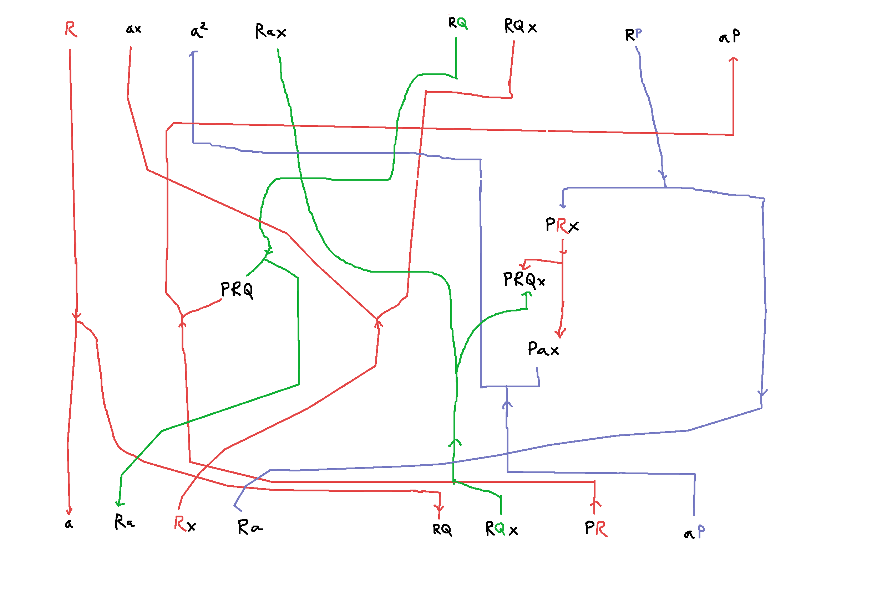
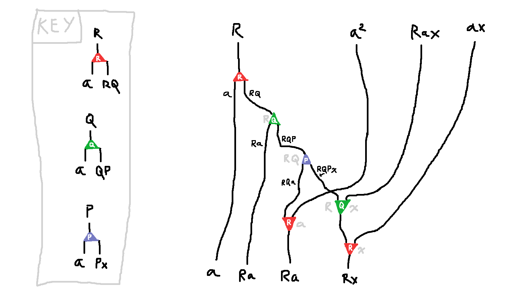
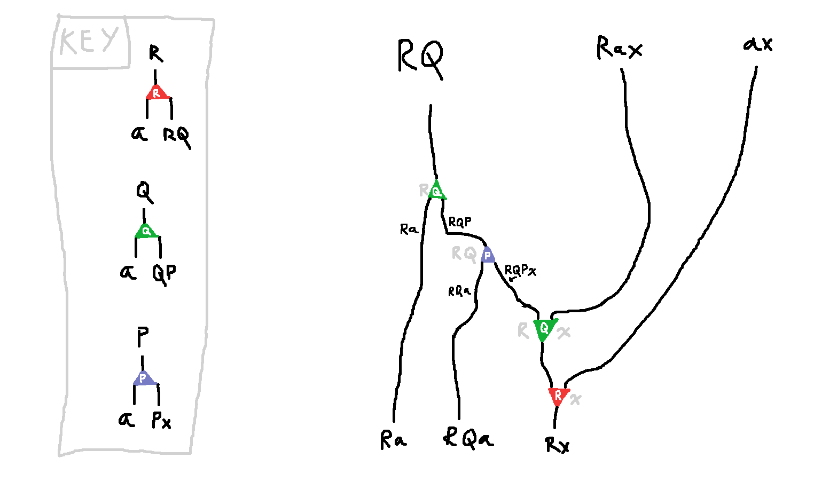

Three Lists in One
On mastodon there arose a question I'd wondered about before myself in the past: since
\[ f(x) = {1\over 1- x}\]
has the funny property that
\[ f(f(f(x))) = x\]
shouldn't this somehow mean something like
\[ \mathsf{List}(\mathsf{List}(\mathsf{List}\, x)) \approx x \]
in type theory? I'd be happy with some variation of this, since
Seven Trees in One treats the "sixth root of unity" in type theory, and gets
\[ x^7 \cong x \]
instead of the implausible
\[ x^6 = 1 \]
The Problem with Lists
But oops can't iterate the type of lists in combinatorial species without hitting infinities. We have
\[ \mathsf{List}\, x = 1 + x + x^2 + x^3 + \cdots\]
and so then
\[ \mathsf{List}(\mathsf{List}\, x) = 1 + (1 + x + x^2 + x^3 + \cdots)\]
\[ + (1 + x + x^2 + x^3 + \cdots)^2 \]
\[ + (1 + x + x^2 + x^3 + \cdots)^3 \]
\[ + \cdots \]
and we already have an infinite number of copies of 1 there!
Let's try a variation of the type of lists, with a "header" of some type $a$:
\[ \mathsf{List}_a\, x = a(1 + x + x^2 + x^3 + \cdots)\]
\[ = a + ax + ax^2 + ax^3 + \cdots\]
Then
\[ \mathsf{List}_a(\mathsf{List}_a\, x) = a + a^2(1 + x + x^2 + x^3 + \cdots)\]
\[ + a^3(1 + x + x^2 + x^3 + \cdots)^2 \]
\[ + a^4(1 + x + x^2 + x^3 + \cdots)^3 \]
\[ + \cdots \]
and instead of $1 + 1 + 1 + \cdots$ we have now $a + a^2 + a^3 + a^4 + \cdots$ which seems perfectly reasonable.
The problem with "header lists"
But now since
\[ \mathsf{List}_a\, x \approx {a\over {1-x}} \]
instead of $1/(1-x)$, we don't have
\[ \mathsf{List}_a(\mathsf{List}_a(\mathsf{List}_a\, x)) \approx x \]
but instead we find that if we make some abbreviations
\[ P = \mathsf{List}_a\, x \]
\[ Q = \mathsf{List}_a(\mathsf{List}_a\, x) \]
\[ R = \mathsf{List}_a(\mathsf{List}_a(\mathsf{List}_a\, x)) \]
we would expect analytically
\[P \approx {a\over {1-x}} \qquad Q \approx {a\over {1-P}} \qquad R \approx {a\over {1-Q}}\]
we should be able to do some algebra and reason that
\[Q \approx {a - ax \over 1-x-a}\]
\[R \approx {a-ax-a^2 \over 1-x-a-a + ax}\]
So maybe we could hope to show type theoretically some version of
\[R(1-x-a-a + ax) = {a-ax-a^2 }\]
or, moving negatives across the equals sign
\[R + Rax + ax + a^2 = a + Rx + Ra + Ra \tag{1} \]
Note that if we happen to have $a = 1$, (that is, we're working with real lists instead of header-lists) then we would find:
\[x + (Rx + R + 1) = R + (Rx + R + 1) \tag{2}\]
So "up to some additive cancellation", there would be a relationship between $x$ and $\mathsf{List}^3\, x$.
Actually Proving Something
Now I wasn't able to prove (1), but I was able to prove something that works "up to additive cancellation" kind of like (2). Let's start with assuming are given types $x, a$, and we have types $P, Q, R$ which satsfy
\[ P = Px + a \qquad Q = QP + a \qquad R = RQ + a \tag{3}\]
in other words we do have
\[ P = \mathsf{List}_a\, x \]
\[ Q = \mathsf{List}_a(\mathsf{List}_a\, x) \]
\[ R = \mathsf{List}_a(\mathsf{List}_a(\mathsf{List}_a\, x)) \]
Then there is an isomorphism
\[ R + ax + a^2 + Rax + C \cong a + Ra + Rx + Ra + C \]
where
\[ C = RQ + RQx + RP + Pa\]
Here's a diagram of it, where every node in the graph is a use of some equation from (3), and horizontal juxtaposition is taking a sum of types:

It's quite a mess! I'm not sure how to clean it up or make more sense of it. I obtained it by slogging through the rational-function reasoning I used to get to (2), and substituting the nearest type-theory-valid reasoning I could find at each step. I think this is technically a mechanically obtainable consequence of the theorems in Seven Trees in One, but I haven't read it recently enough to remember how that goes in general.
Setting $a=1$ again
We can set $a=1$ and obtain
\[ R + x + 1 + Rx + C \cong 1 + R + Rx + R + C \]
which after rearranging summands means there is a type $D$
(namely $D = Rx + R + 1 + C$)
\[ R + D \cong x + D \]
so we can honestly say "list of list of list of $x$ plus $D$ is the same as $x$ plus $D$".
A Simpler Isomorphism
Actually, by staring at the diagram above, and connecting all the nodes corresponding to $C$ at the bottom to all the nodes corresponding to $C$ at the top, and "untangling" the diagram,
I realize that I don't need $C$ at all:

There really is a straightforward direct isomorphism
\[ R + a^2 + Rax + ax \cong a + Ra + Ra + Rx \]
In fact I can squeeze just a little more juice out of this by expanding the top left and bottom left $R$-nodes. If I don't mind exposing $Q$ in my "junk type" then I get an even simpler isomorphism:

\[ RQ + Rax + ax \cong Ra + RQa + Rx \]
i.e.
\[ ax + R(Q + ax) \cong Ra + R(Qa + x) \]
which simplifies upon setting $a = 1$ to
\[ x + R(Q + x) \cong R + R(Q + x) \]
Checking in Agda
I can write down this isomorphism formally
and check its totality:
data _==_ {A : Set} : A → A → Set where
refl : {a : A} → a == a
module _ (A X : Set) where
-- lists of elements Y with an extra "header" element of type A
data L (y : Set) : Set where
nil : (h : A) → L y
cons : (e : y) (tl : L y) → L y
P = L X
Q = L (L X)
R = L (L (L X))
-- We aim to prove
-- RQ + RAX + AX ≅ RA + RQA + RX
-- which has the interesting special case when A = 1 that
-- RQ + RX + X ≅ R + RQ + RX
-- i.e.
-- X + R(Q + X) = R + R(Q + X)
-- which is expressing a type theoretic echo of the numerical fact that
-- the degree of 1/(1-x) is 3, i.e.
-- x = 1/(1-1/(1-1/(1-x)))
data before : Set where
bef1 : Q → R → before
bef2 : X → A → R → before
bef3 : X → A → before
data after : Set where
aft1 : A → R → after
aft2 : A → Q → R → after
aft3 : X → R → after
fore : before → after
fore (bef1 (nil a) r) = aft1 a r
fore (bef1 (cons (nil a) q) r) = aft2 a q r
fore (bef1 (cons (cons x p) q) r) = aft3 x (cons (cons p q) r)
fore (bef2 x a r) = aft3 x (cons (nil a) r)
fore (bef3 x a) = aft3 x (nil a)
back : after → before
back (aft1 a r) = bef1 (nil a) r
back (aft2 a q r) = bef1 (cons (nil a) q) r
back (aft3 x (cons (cons p q) r)) = bef1 (cons (cons x p) q) r
back (aft3 x (cons (nil a) r)) = bef2 x a r
back (aft3 x (nil a)) = bef3 x a
zig : (β : before) → back (fore β) == β
zig (bef1 (nil a) r) = refl
zig (bef1 (cons (nil a) q) r) = refl
zig (bef1 (cons (cons x p) q) r) = refl
zig (bef2 x a r) = refl
zig (bef3 x a) = refl
zag : (α : after) → fore (back α) == α
zag (aft1 a r) = refl
zag (aft2 a q r) = refl
zag (aft3 x (cons (cons p q) r)) = refl
zag (aft3 x (cons (nil a) r)) = refl
zag (aft3 x (nil a)) = refl